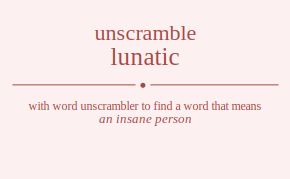

The word found after unscrambling lunatic means that an insane person, a reckless impetuous irresponsible person, insane and believed to be affected by the phases of the moon, .

The word found after unscrambling lunatic means that an insane person, a reckless impetuous irresponsible person, insane and believed to be affected by the phases of the moon, .
You can also find solutions for different combinations of letters in lunatic like lunatic lunatci lunaitc lunaict lunacti lunacit luntaic luntaci luntiac luntica luntcai luntcia luniatc luniact lunitac lunitca lunicat lunicta luncati luncait lunctai lunctia lunciat luncita luantic luantci luanitc luanict luancti luancit luatnic luatnci luatinc luaticn luatcni luatcin luaintc luainct luaitnc luaitcn luaicnt luaictn luacnti luacnit luactni luactin luacint luacitn lutnaic lutnaci lutniac lutnica lutncai lutncia lutanic lutanci lutainc lutaicn lutacni lutacin lutinac lutinca lutianc lutiacn luticna lutican lutcnai lutcnia lutcani lutcain lutcina lutcian luinatc luinact luintac luintca luincat luincta luiantc luianct luiatnc luiatcn luiacnt luiactn luitnac luitnca luitanc luitacn luitcna luitcan luicnat luicnta luicant luicatn luictna luictan lucnati lucnait lucntai lucntia lucniat lucnita lucanti lucanit lucatni lucatin lucaint lucaitn luctnai luctnia luctani luctain luctina luctian lucinat lucinta luciant luciatn lucitna lucitan lnuatic lnuatci lnuaitc lnuaict lnuacti lnuacit lnutaic lnutaci lnutiac lnutica lnutcai lnutcia lnuiatc lnuiact lnuitac lnuitca lnuicat lnuicta lnucati lnucait lnuctai lnuctia lnuciat lnucita lnautic lnautci lnauitc lnauict lnaucti lnaucit lnatuic lnatuci lnatiuc lnaticu lnatcui lnatciu lnaiutc lnaiuct lnaituc lnaitcu lnaicut lnaictu lnacuti lnacuit lnactui lnactiu lnaciut lnacitu lntuaic lntuaci lntuiac lntuica lntucai lntucia lntauic lntauci lntaiuc lntaicu lntacui lntaciu lntiuac lntiuca lntiauc lntiacu lnticua lnticau lntcuai lntcuia lntcaui lntcaiu lntciua lntciau lniuatc lniuact lniutac lniutca lniucat lniucta lniautc lniauct lniatuc lniatcu lniacut lniactu lnituac lnituca lnitauc lnitacu lnitcua lnitcau lnicuat lnicuta lnicaut lnicatu lnictua lnictau lncuati lncuait lncutai lncutia lncuiat lncuita lncauti lncauit lncatui lncatiu lncaiut lncaitu lnctuai lnctuia lnctaui lnctaiu lnctiua lnctiau lnciuat lnciuta lnciaut lnciatu lncitua lncitau launtic launtci launitc launict launcti launcit lautnic lautnci lautinc lauticn lautcni lautcin lauintc lauinct lauitnc lauitcn lauicnt lauictn laucnti laucnit lauctni lauctin laucint laucitn lanutic lanutci lanuitc lanuict lanucti lanucit lantuic lantuci lantiuc lanticu lantcui lantciu laniutc laniuct lanituc lanitcu lanicut lanictu lancuti lancuit lanctui lanctiu lanciut lancitu latunic latunci latuinc latuicn latucni latucin latnuic latnuci latniuc latnicu latncui latnciu latiunc latiucn latinuc latincu laticun laticnu latcuni latcuin latcnui latcniu latciun latcinu laiuntc laiunct laiutnc laiutcn laiucnt laiuctn lainutc lainuct laintuc laintcu laincut lainctu laitunc laitucn laitnuc laitncu laitcun laitcnu laicunt laicutn laicnut laicntu laictun laictnu lacunti lacunit lacutni lacutin lacuint lacuitn lacnuti lacnuit lacntui lacntiu lacniut lacnitu lactuni lactuin lactnui lactniu lactiun lactinu laciunt laciutn lacinut lacintu lacitun lacitnu ltunaic ltunaci ltuniac ltunica ltuncai ltuncia ltuanic ltuanci ltuainc ltuaicn ltuacni ltuacin ltuinac ltuinca ltuianc ltuiacn ltuicna ltuican ltucnai ltucnia ltucani ltucain ltucina ltucian ltnuaic ltnuaci ltnuiac ltnuica ltnucai ltnucia ltnauic ltnauci ltnaiuc ltnaicu ltnacui ltnaciu ltniuac ltniuca ltniauc ltniacu ltnicua ltnicau ltncuai ltncuia ltncaui ltncaiu ltnciua ltnciau ltaunic ltaunci ltauinc ltauicn ltaucni ltaucin ltanuic ltanuci ltaniuc ltanicu ltancui ltanciu ltaiunc ltaiucn ltainuc ltaincu ltaicun ltaicnu ltacuni ltacuin ltacnui ltacniu ltaciun ltacinu ltiunac ltiunca ltiuanc ltiuacn ltiucna ltiucan ltinuac ltinuca ltinauc ltinacu ltincua ltincau ltiaunc ltiaucn ltianuc ltiancu ltiacun ltiacnu lticuna lticuan lticnua lticnau lticaun lticanu ltcunai ltcunia ltcuani ltcuain ltcuina ltcuian ltcnuai ltcnuia ltcnaui ltcnaiu ltcniua ltcniau ltcauni ltcauin ltcanui ltcaniu ltcaiun ltcainu ltciuna ltciuan ltcinua ltcinau ltciaun ltcianu liunatc liunact liuntac liuntca liuncat liuncta liuantc liuanct liuatnc liuatcn liuacnt liuactn liutnac liutnca liutanc liutacn liutcna liutcan liucnat liucnta liucant liucatn liuctna liuctan linuatc linuact linutac linutca linucat linucta linautc linauct linatuc linatcu linacut linactu lintuac lintuca lintauc lintacu lintcua lintcau lincuat lincuta lincaut lincatu linctua linctau liauntc liaunct liautnc liautcn liaucnt liauctn lianutc lianuct liantuc liantcu liancut lianctu liatunc liatucn liatnuc liatncu liatcun liatcnu liacunt liacutn liacnut liacntu liactun liactnu litunac litunca lituanc lituacn litucna litucan litnuac litnuca litnauc litnacu litncua litncau litaunc litaucn litanuc litancu litacun litacnu litcuna litcuan litcnua litcnau litcaun litcanu licunat licunta licuant licuatn licutna licutan licnuat licnuta licnaut licnatu licntua licntau licaunt licautn licanut licantu licatun licatnu lictuna lictuan lictnua lictnau lictaun lictanu lcunati lcunait lcuntai lcuntia lcuniat lcunita lcuanti lcuanit lcuatni lcuatin lcuaint lcuaitn lcutnai lcutnia lcutani lcutain lcutina lcutian lcuinat lcuinta lcuiant lcuiatn lcuitna lcuitan lcnuati lcnuait lcnutai lcnutia lcnuiat lcnuita lcnauti lcnauit lcnatui lcnatiu lcnaiut lcnaitu lcntuai lcntuia lcntaui lcntaiu lcntiua lcntiau lcniuat lcniuta lcniaut lcniatu lcnitua lcnitau lcaunti lcaunit lcautni lcautin lcauint lcauitn lcanuti lcanuit lcantui lcantiu lcaniut lcanitu lcatuni lcatuin lcatnui lcatniu lcatiun lcatinu lcaiunt lcaiutn lcainut lcaintu lcaitun lcaitnu lctunai lctunia lctuani lctuain lctuina lctuian lctnuai lctnuia lctnaui lctnaiu lctniua lctniau lctauni lctauin lctanui lctaniu lctaiun lctainu lctiuna lctiuan lctinua lctinau lctiaun lctianu lciunat lciunta lciuant lciuatn lciutna lciutan lcinuat lcinuta lcinaut lcinatu lcintua lcintau lciaunt lciautn lcianut lciantu lciatun lciatnu lcituna lcituan lcitnua lcitnau lcitaun lcitanu ulnatic ulnatci ulnaitc ulnaict ulnacti ulnacit ulntaic ulntaci ulntiac ulntica ulntcai ulntcia ulniatc ulniact ulnitac ulnitca ulnicat ulnicta ulncati ulncait ulnctai ulnctia ulnciat ulncita ulantic ulantci ulanitc ulanict ulancti ulancit ulatnic ulatnci ulatinc ulaticn ulatcni ulatcin ulaintc ulainct ulaitnc ulaitcn ulaicnt ulaictn ulacnti ulacnit ulactni ulactin ulacint ulacitn ultnaic ultnaci ultniac ultnica ultncai ultncia ultanic ultanci ultainc ultaicn ultacni ultacin ultinac ultinca ultianc ultiacn ulticna ultican ultcnai ultcnia ultcani ultcain ultcina ultcian ulinatc ulinact ulintac ulintca ulincat ulincta uliantc ulianct uliatnc uliatcn uliacnt uliactn ulitnac ulitnca ulitanc ulitacn ulitcna ulitcan ulicnat ulicnta ulicant ulicatn ulictna ulictan ulcnati ulcnait ulcntai ulcntia ulcniat ulcnita ulcanti ulcanit ulcatni ulcatin ulcaint ulcaitn ulctnai ulctnia ulctani ulctain ulctina ulctian ulcinat ulcinta ulciant ulciatn ulcitna ulcitan unlatic unlatci unlaitc unlaict unlacti unlacit unltaic unltaci unltiac unltica unltcai unltcia unliatc unliact unlitac unlitca unlicat unlicta unlcati unlcait unlctai unlctia unlciat unlcita unaltic unaltci unalitc unalict unalcti unalcit unatlic unatlci unatilc unaticl unatcli unatcil unailtc unailct unaitlc unaitcl unaiclt unaictl unaclti unaclit unactli unactil unacilt unacitl untlaic untlaci untliac untlica untlcai untlcia untalic untalci untailc untaicl untacli untacil untilac untilca untialc untiacl unticla untical untclai untclia untcali untcail untcila untcial unilatc unilact uniltac uniltca unilcat unilcta unialtc unialct uniatlc uniatcl uniaclt uniactl unitlac unitlca unitalc unitacl unitcla unitcal uniclat uniclta unicalt unicatl unictla unictal unclati unclait uncltai uncltia uncliat unclita uncalti uncalit uncatli uncatil uncailt uncaitl unctlai unctlia unctali unctail unctila unctial uncilat uncilta uncialt unciatl uncitla uncital ualntic ualntci ualnitc ualnict ualncti ualncit ualtnic ualtnci ualtinc ualticn ualtcni ualtcin ualintc ualinct ualitnc ualitcn ualicnt ualictn ualcnti ualcnit ualctni ualctin ualcint ualcitn uanltic uanltci uanlitc uanlict uanlcti uanlcit uantlic uantlci uantilc uanticl uantcli uantcil uaniltc uanilct uanitlc uanitcl uaniclt uanictl uanclti uanclit uanctli uanctil uancilt uancitl uatlnic uatlnci uatlinc uatlicn uatlcni uatlcin uatnlic uatnlci uatnilc uatnicl uatncli uatncil uatilnc uatilcn uatinlc uatincl uaticln uaticnl uatclni uatclin uatcnli uatcnil uatciln uatcinl uailntc uailnct uailtnc uailtcn uailcnt uailctn uainltc uainlct uaintlc uaintcl uainclt uainctl uaitlnc uaitlcn uaitnlc uaitncl uaitcln uaitcnl uaiclnt uaicltn uaicnlt uaicntl uaictln uaictnl uaclnti uaclnit uacltni uacltin uaclint uaclitn uacnlti uacnlit uacntli uacntil uacnilt uacnitl uactlni uactlin uactnli uactnil uactiln uactinl uacilnt uaciltn uacinlt uacintl uacitln uacitnl utlnaic utlnaci utlniac utlnica utlncai utlncia utlanic utlanci utlainc utlaicn utlacni utlacin utlinac utlinca utlianc utliacn utlicna utlican utlcnai utlcnia utlcani utlcain utlcina utlcian utnlaic utnlaci utnliac utnlica utnlcai utnlcia utnalic utnalci utnailc utnaicl utnacli utnacil utnilac utnilca utnialc utniacl utnicla utnical utnclai utnclia utncali utncail utncila utncial utalnic utalnci utalinc utalicn utalcni utalcin utanlic utanlci utanilc utanicl utancli utancil utailnc utailcn utainlc utaincl utaicln utaicnl utaclni utaclin utacnli utacnil utaciln utacinl utilnac utilnca utilanc utilacn utilcna utilcan utinlac utinlca utinalc utinacl utincla utincal utialnc utialcn utianlc utiancl utiacln utiacnl uticlna uticlan uticnla uticnal uticaln uticanl utclnai utclnia utclani utclain utclina utclian utcnlai utcnlia utcnali utcnail utcnila utcnial utcalni utcalin utcanli utcanil utcailn utcainl utcilna utcilan utcinla utcinal utcialn utcianl uilnatc uilnact uilntac uilntca uilncat uilncta uilantc uilanct uilatnc uilatcn uilacnt uilactn uiltnac uiltnca uiltanc uiltacn uiltcna uiltcan uilcnat uilcnta uilcant uilcatn uilctna uilctan uinlatc uinlact uinltac uinltca uinlcat uinlcta uinaltc uinalct uinatlc uinatcl uinaclt uinactl uintlac uintlca uintalc uintacl uintcla uintcal uinclat uinclta uincalt uincatl uinctla uinctal uialntc uialnct uialtnc uialtcn uialcnt uialctn uianltc uianlct uiantlc uiantcl uianclt uianctl uiatlnc uiatlcn uiatnlc uiatncl uiatcln uiatcnl uiaclnt uiacltn uiacnlt uiacntl uiactln uiactnl uitlnac uitlnca uitlanc uitlacn uitlcna uitlcan uitnlac uitnlca uitnalc uitnacl uitncla uitncal uitalnc uitalcn uitanlc uitancl uitacln uitacnl uitclna uitclan uitcnla uitcnal uitcaln uitcanl uiclnat uiclnta uiclant uiclatn uicltna uicltan uicnlat uicnlta uicnalt uicnatl uicntla uicntal uicalnt uicaltn uicanlt uicantl uicatln uicatnl uictlna uictlan uictnla uictnal uictaln uictanl uclnati uclnait uclntai uclntia uclniat uclnita uclanti uclanit uclatni uclatin uclaint uclaitn ucltnai ucltnia ucltani ucltain ucltina ucltian uclinat uclinta ucliant ucliatn uclitna uclitan ucnlati ucnlait ucnltai ucnltia ucnliat ucnlita ucnalti ucnalit ucnatli ucnatil ucnailt ucnaitl ucntlai ucntlia ucntali ucntail ucntila ucntial ucnilat ucnilta ucnialt ucniatl ucnitla ucnital ucalnti ucalnit ucaltni ucaltin ucalint ucalitn ucanlti ucanlit ucantli ucantil ucanilt ucanitl ucatlni ucatlin ucatnli ucatnil ucatiln ucatinl ucailnt ucailtn ucainlt ucaintl ucaitln ucaitnl uctlnai uctlnia uctlani uctlain uctlina uctlian uctnlai uctnlia uctnali uctnail uctnila uctnial uctalni uctalin uctanli uctanil uctailn uctainl uctilna uctilan uctinla uctinal uctialn uctianl ucilnat ucilnta ucilant ucilatn uciltna uciltan ucinlat ucinlta ucinalt ucinatl ucintla ucintal ucialnt ucialtn ucianlt uciantl uciatln uciatnl ucitlna ucitlan ucitnla ucitnal ucitaln ucitanl nluatic nluatci nluaitc nluaict nluacti nluacit nlutaic nlutaci nlutiac nlutica nlutcai nlutcia nluiatc nluiact nluitac nluitca nluicat nluicta nlucati nlucait nluctai nluctia nluciat nlucita nlautic nlautci nlauitc nlauict nlaucti nlaucit nlatuic nlatuci nlatiuc nlaticu nlatcui nlatciu nlaiutc nlaiuct nlaituc nlaitcu nlaicut nlaictu nlacuti nlacuit nlactui nlactiu nlaciut nlacitu nltuaic nltuaci nltuiac nltuica nltucai nltucia nltauic nltauci nltaiuc nltaicu nltacui nltaciu nltiuac nltiuca nltiauc nltiacu nlticua nlticau nltcuai nltcuia nltcaui nltcaiu nltciua nltciau nliuatc nliuact nliutac nliutca nliucat nliucta nliautc nliauct nliatuc nliatcu nliacut nliactu nlituac nlituca nlitauc nlitacu nlitcua nlitcau nlicuat nlicuta nlicaut nlicatu nlictua nlictau nlcuati nlcuait nlcutai nlcutia nlcuiat nlcuita nlcauti nlcauit nlcatui nlcatiu nlcaiut nlcaitu nlctuai nlctuia nlctaui nlctaiu nlctiua nlctiau nlciuat nlciuta nlciaut nlciatu nlcitua nlcitau nulatic nulatci nulaitc nulaict nulacti nulacit nultaic nultaci nultiac nultica nultcai nultcia nuliatc nuliact nulitac nulitca nulicat nulicta nulcati nulcait nulctai nulctia nulciat nulcita nualtic nualtci nualitc nualict nualcti nualcit nuatlic nuatlci nuatilc nuaticl nuatcli nuatcil nuailtc nuailct nuaitlc nuaitcl nuaiclt nuaictl nuaclti nuaclit nuactli nuactil nuacilt nuacitl nutlaic nutlaci nutliac nutlica nutlcai nutlcia nutalic nutalci nutailc nutaicl nutacli nutacil nutilac nutilca nutialc nutiacl nuticla nutical nutclai nutclia nutcali nutcail nutcila nutcial nuilatc nuilact nuiltac nuiltca nuilcat nuilcta nuialtc nuialct nuiatlc nuiatcl nuiaclt nuiactl nuitlac nuitlca nuitalc nuitacl nuitcla nuitcal nuiclat nuiclta nuicalt nuicatl nuictla nuictal nuclati nuclait nucltai nucltia nucliat nuclita nucalti nucalit nucatli nucatil nucailt nucaitl nuctlai nuctlia nuctali nuctail nuctila nuctial nucilat nucilta nucialt nuciatl nucitla nucital nalutic nalutci naluitc naluict nalucti nalucit naltuic naltuci naltiuc nalticu naltcui naltciu naliutc naliuct nalituc nalitcu nalicut nalictu nalcuti nalcuit nalctui nalctiu nalciut nalcitu naultic naultci naulitc naulict naulcti naulcit nautlic nautlci nautilc nauticl nautcli nautcil nauiltc nauilct nauitlc nauitcl nauiclt nauictl nauclti nauclit nauctli nauctil naucilt naucitl natluic natluci natliuc natlicu natlcui natlciu natulic natulci natuilc natuicl natucli natucil natiluc natilcu natiulc natiucl naticlu naticul natclui natcliu natculi natcuil natcilu natciul nailutc nailuct nailtuc nailtcu nailcut nailctu naiultc naiulct naiutlc naiutcl naiuclt naiuctl naitluc naitlcu naitulc naitucl naitclu naitcul naiclut naicltu naicult naicutl naictlu naictul nacluti nacluit nacltui nacltiu nacliut naclitu naculti naculit nacutli nacutil nacuilt nacuitl nactlui nactliu nactuli nactuil nactilu nactiul nacilut naciltu naciult naciutl nacitlu nacitul ntluaic ntluaci ntluiac ntluica ntlucai ntlucia ntlauic ntlauci ntlaiuc ntlaicu ntlacui ntlaciu ntliuac ntliuca ntliauc ntliacu ntlicua ntlicau ntlcuai ntlcuia ntlcaui ntlcaiu ntlciua ntlciau ntulaic ntulaci ntuliac ntulica ntulcai ntulcia ntualic ntualci ntuailc ntuaicl ntuacli ntuacil ntuilac ntuilca ntuialc ntuiacl ntuicla ntuical ntuclai ntuclia ntucali ntucail ntucila ntucial ntaluic ntaluci ntaliuc ntalicu ntalcui ntalciu ntaulic ntaulci ntauilc ntauicl ntaucli ntaucil ntailuc ntailcu ntaiulc ntaiucl ntaiclu ntaicul ntaclui ntacliu ntaculi ntacuil ntacilu ntaciul ntiluac ntiluca ntilauc ntilacu ntilcua ntilcau ntiulac ntiulca ntiualc ntiuacl ntiucla ntiucal ntialuc ntialcu ntiaulc ntiaucl ntiaclu ntiacul nticlua nticlau nticula nticual nticalu nticaul ntcluai ntcluia ntclaui ntclaiu ntcliua ntcliau ntculai ntculia ntcuali ntcuail ntcuila ntcuial ntcalui ntcaliu ntcauli ntcauil ntcailu ntcaiul ntcilua ntcilau ntciula ntciual ntcialu ntciaul niluatc niluact nilutac nilutca nilucat nilucta nilautc nilauct nilatuc nilatcu nilacut nilactu niltuac niltuca niltauc niltacu niltcua niltcau nilcuat nilcuta nilcaut nilcatu nilctua nilctau niulatc niulact niultac niultca niulcat niulcta niualtc niualct niuatlc niuatcl niuaclt niuactl niutlac niutlca niutalc niutacl niutcla niutcal niuclat niuclta niucalt niucatl niuctla niuctal nialutc nialuct nialtuc nialtcu nialcut nialctu niaultc niaulct niautlc niautcl niauclt niauctl niatluc niatlcu niatulc niatucl niatclu niatcul niaclut niacltu niacult niacutl niactlu niactul nitluac nitluca nitlauc nitlacu nitlcua nitlcau nitulac nitulca nitualc nituacl nitucla nitucal nitaluc nitalcu nitaulc nitaucl nitaclu nitacul nitclua nitclau nitcula nitcual nitcalu nitcaul nicluat nicluta niclaut niclatu nicltua nicltau niculat niculta nicualt nicuatl nicutla nicutal nicalut nicaltu nicault nicautl nicatlu nicatul nictlua nictlau nictula nictual nictalu nictaul ncluati ncluait nclutai nclutia ncluiat ncluita nclauti nclauit nclatui nclatiu nclaiut nclaitu ncltuai ncltuia ncltaui ncltaiu ncltiua ncltiau ncliuat ncliuta ncliaut ncliatu nclitua nclitau nculati nculait ncultai ncultia nculiat nculita ncualti ncualit ncuatli ncuatil ncuailt ncuaitl ncutlai ncutlia ncutali ncutail ncutila ncutial ncuilat ncuilta ncuialt ncuiatl ncuitla ncuital ncaluti ncaluit ncaltui ncaltiu ncaliut ncalitu ncaulti ncaulit ncautli ncautil ncauilt ncauitl ncatlui ncatliu ncatuli ncatuil ncatilu ncatiul ncailut ncailtu ncaiult ncaiutl ncaitlu ncaitul nctluai nctluia nctlaui nctlaiu nctliua nctliau nctulai nctulia nctuali nctuail nctuila nctuial nctalui nctaliu nctauli nctauil nctailu nctaiul nctilua nctilau nctiula nctiual nctialu nctiaul nciluat nciluta ncilaut ncilatu nciltua nciltau nciulat nciulta nciualt nciuatl nciutla nciutal ncialut ncialtu nciault nciautl nciatlu nciatul ncitlua ncitlau ncitula ncitual ncitalu ncitaul aluntic aluntci alunitc alunict aluncti aluncit alutnic alutnci alutinc aluticn alutcni alutcin aluintc aluinct aluitnc aluitcn aluicnt aluictn alucnti alucnit aluctni aluctin alucint alucitn alnutic alnutci alnuitc alnuict alnucti alnucit alntuic alntuci alntiuc alnticu alntcui alntciu alniutc alniuct alnituc alnitcu alnicut alnictu alncuti alncuit alnctui alnctiu alnciut alncitu altunic altunci altuinc altuicn altucni altucin altnuic altnuci altniuc altnicu altncui altnciu altiunc altiucn altinuc altincu alticun alticnu altcuni altcuin altcnui altcniu altciun altcinu aliuntc aliunct aliutnc aliutcn aliucnt aliuctn alinutc alinuct alintuc alintcu alincut alinctu alitunc alitucn alitnuc alitncu alitcun alitcnu alicunt alicutn alicnut alicntu alictun alictnu alcunti alcunit alcutni alcutin alcuint alcuitn alcnuti alcnuit alcntui alcntiu alcniut alcnitu alctuni alctuin alctnui alctniu alctiun alctinu alciunt alciutn alcinut alcintu alcitun alcitnu aulntic aulntci aulnitc aulnict aulncti aulncit aultnic aultnci aultinc aulticn aultcni aultcin aulintc aulinct aulitnc aulitcn aulicnt aulictn aulcnti aulcnit aulctni aulctin aulcint aulcitn aunltic aunltci aunlitc aunlict aunlcti aunlcit auntlic auntlci auntilc aunticl auntcli auntcil auniltc aunilct aunitlc aunitcl auniclt aunictl aunclti aunclit aunctli aunctil auncilt auncitl autlnic autlnci autlinc autlicn autlcni autlcin autnlic autnlci autnilc autnicl autncli autncil autilnc autilcn autinlc autincl auticln auticnl autclni autclin autcnli autcnil autciln autcinl auilntc auilnct auiltnc auiltcn auilcnt auilctn auinltc auinlct auintlc auintcl auinclt auinctl auitlnc auitlcn auitnlc auitncl auitcln auitcnl auiclnt auicltn auicnlt auicntl auictln auictnl auclnti auclnit aucltni aucltin auclint auclitn aucnlti aucnlit aucntli aucntil aucnilt aucnitl auctlni auctlin auctnli auctnil auctiln auctinl aucilnt auciltn aucinlt aucintl aucitln aucitnl anlutic anlutci anluitc anluict anlucti anlucit anltuic anltuci anltiuc anlticu anltcui anltciu anliutc anliuct anlituc anlitcu anlicut anlictu anlcuti anlcuit anlctui anlctiu anlciut anlcitu anultic anultci anulitc anulict anulcti anulcit anutlic anutlci anutilc anuticl anutcli anutcil anuiltc anuilct anuitlc anuitcl anuiclt anuictl anuclti anuclit anuctli anuctil anucilt anucitl antluic antluci antliuc antlicu antlcui antlciu antulic antulci antuilc antuicl antucli antucil antiluc antilcu antiulc antiucl anticlu anticul antclui antcliu antculi antcuil antcilu antciul anilutc aniluct aniltuc aniltcu anilcut anilctu aniultc aniulct aniutlc aniutcl aniuclt aniuctl anitluc anitlcu anitulc anitucl anitclu anitcul aniclut anicltu anicult anicutl anictlu anictul ancluti ancluit ancltui ancltiu ancliut anclitu anculti anculit ancutli ancutil ancuilt ancuitl anctlui anctliu anctuli anctuil anctilu anctiul ancilut anciltu anciult anciutl ancitlu ancitul atlunic atlunci atluinc atluicn atlucni atlucin atlnuic atlnuci atlniuc atlnicu atlncui atlnciu atliunc atliucn atlinuc atlincu atlicun atlicnu atlcuni atlcuin atlcnui atlcniu atlciun atlcinu atulnic atulnci atulinc atulicn atulcni atulcin atunlic atunlci atunilc atunicl atuncli atuncil atuilnc atuilcn atuinlc atuincl atuicln atuicnl atuclni atuclin atucnli atucnil atuciln atucinl atnluic atnluci atnliuc atnlicu atnlcui atnlciu atnulic atnulci atnuilc atnuicl atnucli atnucil atniluc atnilcu atniulc atniucl atniclu atnicul atnclui atncliu atnculi atncuil atncilu atnciul atilunc atilucn atilnuc atilncu atilcun atilcnu atiulnc atiulcn atiunlc atiuncl atiucln atiucnl atinluc atinlcu atinulc atinucl atinclu atincul aticlun aticlnu aticuln aticunl aticnlu aticnul atcluni atcluin atclnui atclniu atcliun atclinu atculni atculin atcunli atcunil atcuiln atcuinl atcnlui atcnliu atcnuli atcnuil atcnilu atcniul atcilun atcilnu atciuln atciunl atcinlu atcinul ailuntc ailunct ailutnc ailutcn ailucnt ailuctn ailnutc ailnuct ailntuc ailntcu ailncut ailnctu ailtunc ailtucn ailtnuc ailtncu ailtcun ailtcnu ailcunt ailcutn ailcnut ailcntu ailctun ailctnu aiulntc aiulnct aiultnc aiultcn aiulcnt aiulctn aiunltc aiunlct aiuntlc aiuntcl aiunclt aiunctl aiutlnc aiutlcn aiutnlc aiutncl aiutcln aiutcnl aiuclnt aiucltn aiucnlt aiucntl aiuctln aiuctnl ainlutc ainluct ainltuc ainltcu ainlcut ainlctu ainultc ainulct ainutlc ainutcl ainuclt ainuctl aintluc aintlcu aintulc aintucl aintclu aintcul ainclut aincltu aincult aincutl ainctlu ainctul aitlunc aitlucn aitlnuc aitlncu aitlcun aitlcnu aitulnc aitulcn aitunlc aituncl aitucln aitucnl aitnluc aitnlcu aitnulc aitnucl aitnclu aitncul aitclun aitclnu aitculn aitcunl aitcnlu aitcnul aiclunt aiclutn aiclnut aiclntu aicltun aicltnu aiculnt aicultn aicunlt aicuntl aicutln aicutnl aicnlut aicnltu aicnult aicnutl aicntlu aicntul aictlun aictlnu aictuln aictunl aictnlu aictnul aclunti aclunit aclutni aclutin acluint acluitn aclnuti aclnuit aclntui aclntiu aclniut aclnitu acltuni acltuin acltnui acltniu acltiun acltinu acliunt acliutn aclinut aclintu aclitun aclitnu aculnti aculnit acultni acultin aculint aculitn acunlti acunlit acuntli acuntil acunilt acunitl acutlni acutlin acutnli acutnil acutiln acutinl acuilnt acuiltn acuinlt acuintl acuitln acuitnl acnluti acnluit acnltui acnltiu acnliut acnlitu acnulti acnulit acnutli acnutil acnuilt acnuitl acntlui acntliu acntuli acntuil acntilu acntiul acnilut acniltu acniult acniutl acnitlu acnitul actluni actluin actlnui actlniu actliun actlinu actulni actulin actunli actunil actuiln actuinl actnlui actnliu actnuli actnuil actnilu actniul actilun actilnu actiuln actiunl actinlu actinul acilunt acilutn acilnut acilntu aciltun aciltnu aciulnt aciultn aciunlt aciuntl aciutln aciutnl acinlut acinltu acinult acinutl acintlu acintul acitlun acitlnu acituln acitunl acitnlu acitnul tlunaic tlunaci tluniac tlunica tluncai tluncia tluanic tluanci tluainc tluaicn tluacni tluacin tluinac tluinca tluianc tluiacn tluicna tluican tlucnai tlucnia tlucani tlucain tlucina tlucian tlnuaic tlnuaci tlnuiac tlnuica tlnucai tlnucia tlnauic tlnauci tlnaiuc tlnaicu tlnacui tlnaciu tlniuac tlniuca tlniauc tlniacu tlnicua tlnicau tlncuai tlncuia tlncaui tlncaiu tlnciua tlnciau tlaunic tlaunci tlauinc tlauicn tlaucni tlaucin tlanuic tlanuci tlaniuc tlanicu tlancui tlanciu tlaiunc tlaiucn tlainuc tlaincu tlaicun tlaicnu tlacuni tlacuin tlacnui tlacniu tlaciun tlacinu tliunac tliunca tliuanc tliuacn tliucna tliucan tlinuac tlinuca tlinauc tlinacu tlincua tlincau tliaunc tliaucn tlianuc tliancu tliacun tliacnu tlicuna tlicuan tlicnua tlicnau tlicaun tlicanu tlcunai tlcunia tlcuani tlcuain tlcuina tlcuian tlcnuai tlcnuia tlcnaui tlcnaiu tlcniua tlcniau tlcauni tlcauin tlcanui tlcaniu tlcaiun tlcainu tlciuna tlciuan tlcinua tlcinau tlciaun tlcianu tulnaic tulnaci tulniac tulnica tulncai tulncia tulanic tulanci tulainc tulaicn tulacni tulacin tulinac tulinca tulianc tuliacn tulicna tulican tulcnai tulcnia tulcani tulcain tulcina tulcian tunlaic tunlaci tunliac tunlica tunlcai tunlcia tunalic tunalci tunailc tunaicl tunacli tunacil tunilac tunilca tunialc tuniacl tunicla tunical tunclai tunclia tuncali tuncail tuncila tuncial tualnic tualnci tualinc tualicn tualcni tualcin tuanlic tuanlci tuanilc tuanicl tuancli tuancil tuailnc tuailcn tuainlc tuaincl tuaicln tuaicnl tuaclni tuaclin tuacnli tuacnil tuaciln tuacinl tuilnac tuilnca tuilanc tuilacn tuilcna tuilcan tuinlac tuinlca tuinalc tuinacl tuincla tuincal tuialnc tuialcn tuianlc tuiancl tuiacln tuiacnl tuiclna tuiclan tuicnla tuicnal tuicaln tuicanl tuclnai tuclnia tuclani tuclain tuclina tuclian tucnlai tucnlia tucnali tucnail tucnila tucnial tucalni tucalin tucanli tucanil tucailn tucainl tucilna tucilan tucinla tucinal tucialn tucianl tnluaic tnluaci tnluiac tnluica tnlucai tnlucia tnlauic tnlauci tnlaiuc tnlaicu tnlacui tnlaciu tnliuac tnliuca tnliauc tnliacu tnlicua tnlicau tnlcuai tnlcuia tnlcaui tnlcaiu tnlciua tnlciau tnulaic tnulaci tnuliac tnulica tnulcai tnulcia tnualic tnualci tnuailc tnuaicl tnuacli tnuacil tnuilac tnuilca tnuialc tnuiacl tnuicla tnuical tnuclai tnuclia tnucali tnucail tnucila tnucial tnaluic tnaluci tnaliuc tnalicu tnalcui tnalciu tnaulic tnaulci tnauilc tnauicl tnaucli tnaucil tnailuc tnailcu tnaiulc tnaiucl tnaiclu tnaicul tnaclui tnacliu tnaculi tnacuil tnacilu tnaciul tniluac tniluca tnilauc tnilacu tnilcua tnilcau tniulac tniulca tniualc tniuacl tniucla tniucal tnialuc tnialcu tniaulc tniaucl tniaclu tniacul tniclua tniclau tnicula tnicual tnicalu tnicaul tncluai tncluia tnclaui tnclaiu tncliua tncliau tnculai tnculia tncuali tncuail tncuila tncuial tncalui tncaliu tncauli tncauil tncailu tncaiul tncilua tncilau tnciula tnciual tncialu tnciaul talunic talunci taluinc taluicn talucni talucin talnuic talnuci talniuc talnicu talncui talnciu taliunc taliucn talinuc talincu talicun talicnu talcuni talcuin talcnui talcniu talciun talcinu taulnic taulnci taulinc taulicn taulcni taulcin taunlic taunlci taunilc taunicl tauncli tauncil tauilnc tauilcn tauinlc tauincl tauicln tauicnl tauclni tauclin taucnli taucnil tauciln taucinl tanluic tanluci tanliuc tanlicu tanlcui tanlciu tanulic tanulci tanuilc tanuicl tanucli tanucil taniluc tanilcu taniulc taniucl taniclu tanicul tanclui tancliu tanculi tancuil tancilu tanciul tailunc tailucn tailnuc tailncu tailcun tailcnu taiulnc taiulcn taiunlc taiuncl taiucln taiucnl tainluc tainlcu tainulc tainucl tainclu taincul taiclun taiclnu taiculn taicunl taicnlu taicnul tacluni tacluin taclnui taclniu tacliun taclinu taculni taculin tacunli tacunil tacuiln tacuinl tacnlui tacnliu tacnuli tacnuil tacnilu tacniul tacilun tacilnu taciuln taciunl tacinlu tacinul tilunac tilunca tiluanc tiluacn tilucna tilucan tilnuac tilnuca tilnauc tilnacu tilncua tilncau tilaunc tilaucn tilanuc tilancu tilacun tilacnu tilcuna tilcuan tilcnua tilcnau tilcaun tilcanu tiulnac tiulnca tiulanc tiulacn tiulcna tiulcan tiunlac tiunlca tiunalc tiunacl tiuncla tiuncal tiualnc tiualcn tiuanlc tiuancl tiuacln tiuacnl tiuclna tiuclan tiucnla tiucnal tiucaln tiucanl tinluac tinluca tinlauc tinlacu tinlcua tinlcau tinulac tinulca tinualc tinuacl tinucla tinucal tinaluc tinalcu tinaulc tinaucl tinaclu tinacul tinclua tinclau tincula tincual tincalu tincaul tialunc tialucn tialnuc tialncu tialcun tialcnu tiaulnc tiaulcn tiaunlc tiauncl tiaucln tiaucnl tianluc tianlcu tianulc tianucl tianclu tiancul tiaclun tiaclnu tiaculn tiacunl tiacnlu tiacnul ticluna ticluan ticlnua ticlnau ticlaun ticlanu ticulna ticulan ticunla ticunal ticualn ticuanl ticnlua ticnlau ticnula ticnual ticnalu ticnaul ticalun ticalnu ticauln ticaunl ticanlu ticanul tclunai tclunia tcluani tcluain tcluina tcluian tclnuai tclnuia tclnaui tclnaiu tclniua tclniau tclauni tclauin tclanui tclaniu tclaiun tclainu tcliuna tcliuan tclinua tclinau tcliaun tclianu tculnai tculnia tculani tculain tculina tculian tcunlai tcunlia tcunali tcunail tcunila tcunial tcualni tcualin tcuanli tcuanil tcuailn tcuainl tcuilna tcuilan tcuinla tcuinal tcuialn tcuianl tcnluai tcnluia tcnlaui tcnlaiu tcnliua tcnliau tcnulai tcnulia tcnuali tcnuail tcnuila tcnuial tcnalui tcnaliu tcnauli tcnauil tcnailu tcnaiul tcnilua tcnilau tcniula tcniual tcnialu tcniaul tcaluni tcaluin tcalnui tcalniu tcaliun tcalinu tcaulni tcaulin tcaunli tcaunil tcauiln tcauinl tcanlui tcanliu tcanuli tcanuil tcanilu tcaniul tcailun tcailnu tcaiuln tcaiunl tcainlu tcainul tciluna tciluan tcilnua tcilnau tcilaun tcilanu tciulna tciulan tciunla tciunal tciualn tciuanl tcinlua tcinlau tcinula tcinual tcinalu tcinaul tcialun tcialnu tciauln tciaunl tcianlu tcianul ilunatc ilunact iluntac iluntca iluncat iluncta iluantc iluanct iluatnc iluatcn iluacnt iluactn ilutnac ilutnca ilutanc ilutacn ilutcna ilutcan ilucnat ilucnta ilucant ilucatn iluctna iluctan ilnuatc ilnuact ilnutac ilnutca ilnucat ilnucta ilnautc ilnauct ilnatuc ilnatcu ilnacut ilnactu ilntuac ilntuca ilntauc ilntacu ilntcua ilntcau ilncuat ilncuta ilncaut ilncatu ilnctua ilnctau ilauntc ilaunct ilautnc ilautcn ilaucnt ilauctn ilanutc ilanuct ilantuc ilantcu ilancut ilanctu ilatunc ilatucn ilatnuc ilatncu ilatcun ilatcnu ilacunt ilacutn ilacnut ilacntu ilactun ilactnu iltunac iltunca iltuanc iltuacn iltucna iltucan iltnuac iltnuca iltnauc iltnacu iltncua iltncau iltaunc iltaucn iltanuc iltancu iltacun iltacnu iltcuna iltcuan iltcnua iltcnau iltcaun iltcanu ilcunat ilcunta ilcuant ilcuatn ilcutna ilcutan ilcnuat ilcnuta ilcnaut ilcnatu ilcntua ilcntau ilcaunt ilcautn ilcanut ilcantu ilcatun ilcatnu ilctuna ilctuan ilctnua ilctnau ilctaun ilctanu iulnatc iulnact iulntac iulntca iulncat iulncta iulantc iulanct iulatnc iulatcn iulacnt iulactn iultnac iultnca iultanc iultacn iultcna iultcan iulcnat iulcnta iulcant iulcatn iulctna iulctan iunlatc iunlact iunltac iunltca iunlcat iunlcta iunaltc iunalct iunatlc iunatcl iunaclt iunactl iuntlac iuntlca iuntalc iuntacl iuntcla iuntcal iunclat iunclta iuncalt iuncatl iunctla iunctal iualntc iualnct iualtnc iualtcn iualcnt iualctn iuanltc iuanlct iuantlc iuantcl iuanclt iuanctl iuatlnc iuatlcn iuatnlc iuatncl iuatcln iuatcnl iuaclnt iuacltn iuacnlt iuacntl iuactln iuactnl iutlnac iutlnca iutlanc iutlacn iutlcna iutlcan iutnlac iutnlca iutnalc iutnacl iutncla iutncal iutalnc iutalcn iutanlc iutancl iutacln iutacnl iutclna iutclan iutcnla iutcnal iutcaln iutcanl iuclnat iuclnta iuclant iuclatn iucltna iucltan iucnlat iucnlta iucnalt iucnatl iucntla iucntal iucalnt iucaltn iucanlt iucantl iucatln iucatnl iuctlna iuctlan iuctnla iuctnal iuctaln iuctanl inluatc inluact inlutac inlutca inlucat inlucta inlautc inlauct inlatuc inlatcu inlacut inlactu inltuac inltuca inltauc inltacu inltcua inltcau inlcuat inlcuta inlcaut inlcatu inlctua inlctau inulatc inulact inultac inultca inulcat inulcta inualtc inualct inuatlc inuatcl inuaclt inuactl inutlac inutlca inutalc inutacl inutcla inutcal inuclat inuclta inucalt inucatl inuctla inuctal inalutc inaluct inaltuc inaltcu inalcut inalctu inaultc inaulct inautlc inautcl inauclt inauctl inatluc inatlcu inatulc inatucl inatclu inatcul inaclut inacltu inacult inacutl inactlu inactul intluac intluca intlauc intlacu intlcua intlcau intulac intulca intualc intuacl intucla intucal intaluc intalcu intaulc intaucl intaclu intacul intclua intclau intcula intcual intcalu intcaul incluat incluta inclaut inclatu incltua incltau inculat inculta incualt incuatl incutla incutal incalut incaltu incault incautl incatlu incatul inctlua inctlau inctula inctual inctalu inctaul ialuntc ialunct ialutnc ialutcn ialucnt ialuctn ialnutc ialnuct ialntuc ialntcu ialncut ialnctu ialtunc ialtucn ialtnuc ialtncu ialtcun ialtcnu ialcunt ialcutn ialcnut ialcntu ialctun ialctnu iaulntc iaulnct iaultnc iaultcn iaulcnt iaulctn iaunltc iaunlct iauntlc iauntcl iaunclt iaunctl iautlnc iautlcn iautnlc iautncl iautcln iautcnl iauclnt iaucltn iaucnlt iaucntl iauctln iauctnl ianlutc ianluct ianltuc ianltcu ianlcut ianlctu ianultc ianulct ianutlc ianutcl ianuclt ianuctl iantluc iantlcu iantulc iantucl iantclu iantcul ianclut iancltu iancult iancutl ianctlu ianctul iatlunc iatlucn iatlnuc iatlncu iatlcun iatlcnu iatulnc iatulcn iatunlc iatuncl iatucln iatucnl iatnluc iatnlcu iatnulc iatnucl iatnclu iatncul iatclun iatclnu iatculn iatcunl iatcnlu iatcnul iaclunt iaclutn iaclnut iaclntu iacltun iacltnu iaculnt iacultn iacunlt iacuntl iacutln iacutnl iacnlut iacnltu iacnult iacnutl iacntlu iacntul iactlun iactlnu iactuln iactunl iactnlu iactnul itlunac itlunca itluanc itluacn itlucna itlucan itlnuac itlnuca itlnauc itlnacu itlncua itlncau itlaunc itlaucn itlanuc itlancu itlacun itlacnu itlcuna itlcuan itlcnua itlcnau itlcaun itlcanu itulnac itulnca itulanc itulacn itulcna itulcan itunlac itunlca itunalc itunacl ituncla ituncal itualnc itualcn ituanlc ituancl ituacln ituacnl ituclna ituclan itucnla itucnal itucaln itucanl itnluac itnluca itnlauc itnlacu itnlcua itnlcau itnulac itnulca itnualc itnuacl itnucla itnucal itnaluc itnalcu itnaulc itnaucl itnaclu itnacul itnclua itnclau itncula itncual itncalu itncaul italunc italucn italnuc italncu italcun italcnu itaulnc itaulcn itaunlc itauncl itaucln itaucnl itanluc itanlcu itanulc itanucl itanclu itancul itaclun itaclnu itaculn itacunl itacnlu itacnul itcluna itcluan itclnua itclnau itclaun itclanu itculna itculan itcunla itcunal itcualn itcuanl itcnlua itcnlau itcnula itcnual itcnalu itcnaul itcalun itcalnu itcauln itcaunl itcanlu itcanul iclunat iclunta icluant icluatn iclutna iclutan iclnuat iclnuta iclnaut iclnatu iclntua iclntau iclaunt iclautn iclanut iclantu iclatun iclatnu icltuna icltuan icltnua icltnau icltaun icltanu iculnat iculnta iculant iculatn icultna icultan icunlat icunlta icunalt icunatl icuntla icuntal icualnt icualtn icuanlt icuantl icuatln icuatnl icutlna icutlan icutnla icutnal icutaln icutanl icnluat icnluta icnlaut icnlatu icnltua icnltau icnulat icnulta icnualt icnuatl icnutla icnutal icnalut icnaltu icnault icnautl icnatlu icnatul icntlua icntlau icntula icntual icntalu icntaul icalunt icalutn icalnut icalntu icaltun icaltnu icaulnt icaultn icaunlt icauntl icautln icautnl icanlut icanltu icanult icanutl icantlu icantul icatlun icatlnu icatuln icatunl icatnlu icatnul ictluna ictluan ictlnua ictlnau ictlaun ictlanu ictulna ictulan ictunla ictunal ictualn ictuanl ictnlua ictnlau ictnula ictnual ictnalu ictnaul ictalun ictalnu ictauln ictaunl ictanlu ictanul clunati clunait cluntai cluntia cluniat clunita cluanti cluanit cluatni cluatin cluaint cluaitn clutnai clutnia clutani clutain clutina clutian cluinat cluinta cluiant cluiatn cluitna cluitan clnuati clnuait clnutai clnutia clnuiat clnuita clnauti clnauit clnatui clnatiu clnaiut clnaitu clntuai clntuia clntaui clntaiu clntiua clntiau clniuat clniuta clniaut clniatu clnitua clnitau claunti claunit clautni clautin clauint clauitn clanuti clanuit clantui clantiu claniut clanitu clatuni clatuin clatnui clatniu clatiun clatinu claiunt claiutn clainut claintu claitun claitnu cltunai cltunia cltuani cltuain cltuina cltuian cltnuai cltnuia cltnaui cltnaiu cltniua cltniau cltauni cltauin cltanui cltaniu cltaiun cltainu cltiuna cltiuan cltinua cltinau cltiaun cltianu cliunat cliunta cliuant cliuatn cliutna cliutan clinuat clinuta clinaut clinatu clintua clintau cliaunt cliautn clianut cliantu cliatun cliatnu clituna clituan clitnua clitnau clitaun clitanu culnati culnait culntai culntia culniat culnita culanti culanit culatni culatin culaint culaitn cultnai cultnia cultani cultain cultina cultian culinat culinta culiant culiatn culitna culitan cunlati cunlait cunltai cunltia cunliat cunlita cunalti cunalit cunatli cunatil cunailt cunaitl cuntlai cuntlia cuntali cuntail cuntila cuntial cunilat cunilta cunialt cuniatl cunitla cunital cualnti cualnit cualtni cualtin cualint cualitn cuanlti cuanlit cuantli cuantil cuanilt cuanitl cuatlni cuatlin cuatnli cuatnil cuatiln cuatinl cuailnt cuailtn cuainlt cuaintl cuaitln cuaitnl cutlnai cutlnia cutlani cutlain cutlina cutlian cutnlai cutnlia cutnali cutnail cutnila cutnial cutalni cutalin cutanli cutanil cutailn cutainl cutilna cutilan cutinla cutinal cutialn cutianl cuilnat cuilnta cuilant cuilatn cuiltna cuiltan cuinlat cuinlta cuinalt cuinatl cuintla cuintal cuialnt cuialtn cuianlt cuiantl cuiatln cuiatnl cuitlna cuitlan cuitnla cuitnal cuitaln cuitanl cnluati cnluait cnlutai cnlutia cnluiat cnluita cnlauti cnlauit cnlatui cnlatiu cnlaiut cnlaitu cnltuai cnltuia cnltaui cnltaiu cnltiua cnltiau cnliuat cnliuta cnliaut cnliatu cnlitua cnlitau cnulati cnulait cnultai cnultia cnuliat cnulita cnualti cnualit cnuatli cnuatil cnuailt cnuaitl cnutlai cnutlia cnutali cnutail cnutila cnutial cnuilat cnuilta cnuialt cnuiatl cnuitla cnuital cnaluti cnaluit cnaltui cnaltiu cnaliut cnalitu cnaulti cnaulit cnautli cnautil cnauilt cnauitl cnatlui cnatliu cnatuli cnatuil cnatilu cnatiul cnailut cnailtu cnaiult cnaiutl cnaitlu cnaitul cntluai cntluia cntlaui cntlaiu cntliua cntliau cntulai cntulia cntuali cntuail cntuila cntuial cntalui cntaliu cntauli cntauil cntailu cntaiul cntilua cntilau cntiula cntiual cntialu cntiaul cniluat cniluta cnilaut cnilatu cniltua cniltau cniulat cniulta cniualt cniuatl cniutla cniutal cnialut cnialtu cniault cniautl cniatlu cniatul cnitlua cnitlau cnitula cnitual cnitalu cnitaul calunti calunit calutni calutin caluint caluitn calnuti calnuit calntui calntiu calniut calnitu caltuni caltuin caltnui caltniu caltiun caltinu caliunt caliutn calinut calintu calitun calitnu caulnti caulnit caultni caultin caulint caulitn caunlti caunlit cauntli cauntil caunilt caunitl cautlni cautlin cautnli cautnil cautiln cautinl cauilnt cauiltn cauinlt cauintl cauitln cauitnl canluti canluit canltui canltiu canliut canlitu canulti canulit canutli canutil canuilt canuitl cantlui cantliu cantuli cantuil cantilu cantiul canilut caniltu caniult caniutl canitlu canitul catluni catluin catlnui catlniu catliun catlinu catulni catulin catunli catunil catuiln catuinl catnlui catnliu catnuli catnuil catnilu catniul catilun catilnu catiuln catiunl catinlu catinul cailunt cailutn cailnut cailntu cailtun cailtnu caiulnt caiultn caiunlt caiuntl caiutln caiutnl cainlut cainltu cainult cainutl caintlu caintul caitlun caitlnu caituln caitunl caitnlu caitnul ctlunai ctlunia ctluani ctluain ctluina ctluian ctlnuai ctlnuia ctlnaui ctlnaiu ctlniua ctlniau ctlauni ctlauin ctlanui ctlaniu ctlaiun ctlainu ctliuna ctliuan ctlinua ctlinau ctliaun ctlianu ctulnai ctulnia ctulani ctulain ctulina ctulian ctunlai ctunlia ctunali ctunail ctunila ctunial ctualni ctualin ctuanli ctuanil ctuailn ctuainl ctuilna ctuilan ctuinla ctuinal ctuialn ctuianl ctnluai ctnluia ctnlaui ctnlaiu ctnliua ctnliau ctnulai ctnulia ctnuali ctnuail ctnuila ctnuial ctnalui ctnaliu ctnauli ctnauil ctnailu ctnaiul ctnilua ctnilau ctniula ctniual ctnialu ctniaul ctaluni ctaluin ctalnui ctalniu ctaliun ctalinu ctaulni ctaulin ctaunli ctaunil ctauiln ctauinl ctanlui ctanliu ctanuli ctanuil ctanilu ctaniul ctailun ctailnu ctaiuln ctaiunl ctainlu ctainul ctiluna ctiluan ctilnua ctilnau ctilaun ctilanu ctiulna ctiulan ctiunla ctiunal ctiualn ctiuanl ctinlua ctinlau ctinula ctinual ctinalu ctinaul ctialun ctialnu ctiauln ctiaunl ctianlu ctianul cilunat cilunta ciluant ciluatn cilutna cilutan cilnuat cilnuta cilnaut cilnatu cilntua cilntau cilaunt cilautn cilanut cilantu cilatun cilatnu ciltuna ciltuan ciltnua ciltnau ciltaun ciltanu ciulnat ciulnta ciulant ciulatn ciultna ciultan ciunlat ciunlta ciunalt ciunatl ciuntla ciuntal ciualnt ciualtn ciuanlt ciuantl ciuatln ciuatnl ciutlna ciutlan ciutnla ciutnal ciutaln ciutanl cinluat cinluta cinlaut cinlatu cinltua cinltau cinulat cinulta cinualt cinuatl cinutla cinutal cinalut cinaltu cinault cinautl cinatlu cinatul cintlua cintlau cintula cintual cintalu cintaul cialunt cialutn cialnut cialntu cialtun cialtnu ciaulnt ciaultn ciaunlt ciauntl ciautln ciautnl cianlut cianltu cianult cianutl ciantlu ciantul ciatlun ciatlnu ciatuln ciatunl ciatnlu ciatnul citluna citluan citlnua citlnau citlaun citlanu citulna citulan citunla citunal citualn cituanl citnlua citnlau citnula citnual citnalu citnaul citalun citalnu citauln citaunl citanlu citanul.
Unscramble Words is registered trademark.